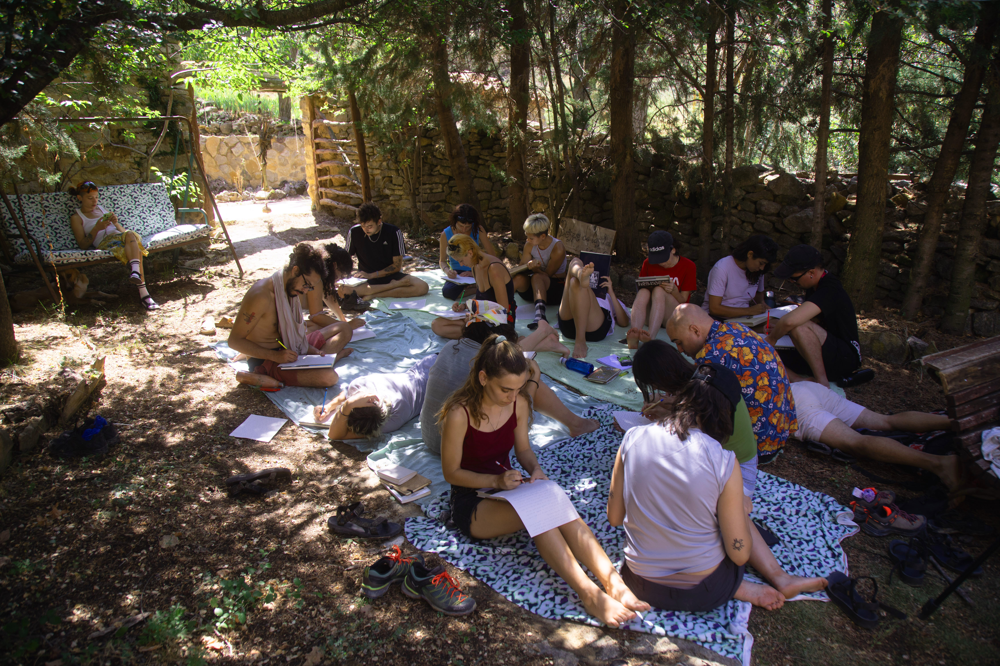
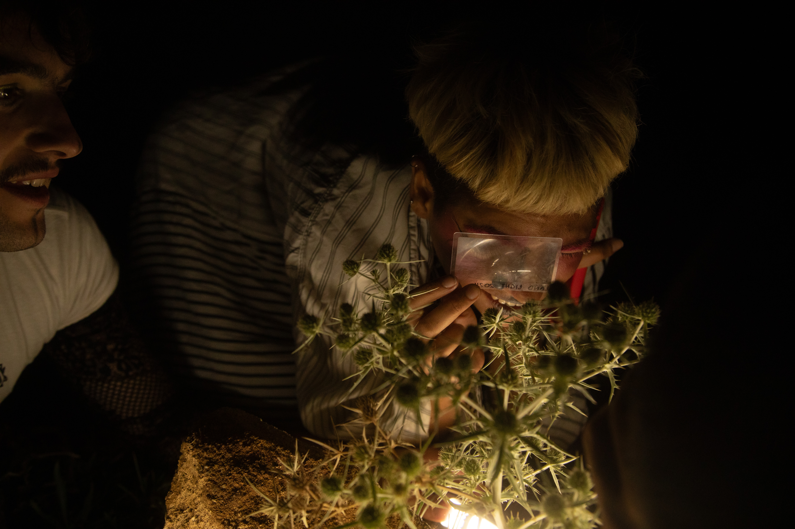
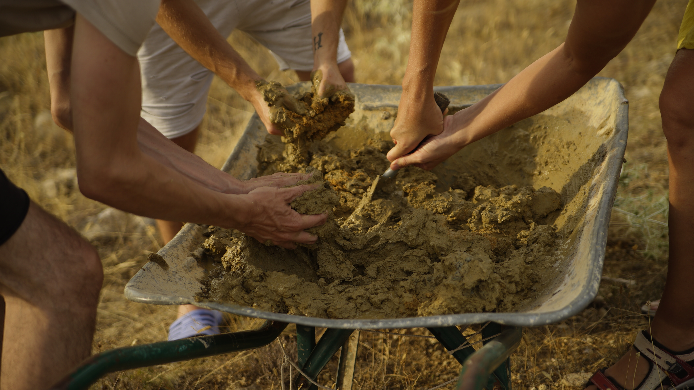
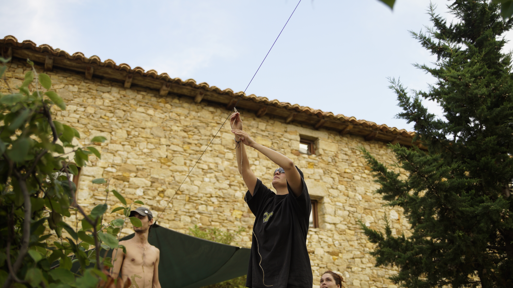
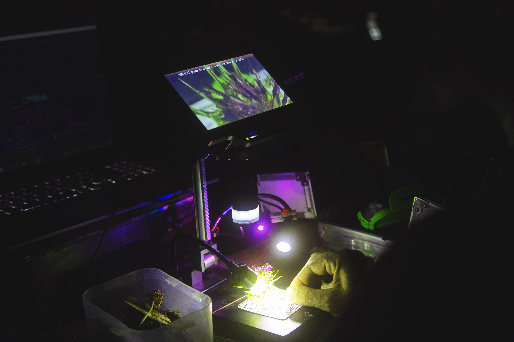
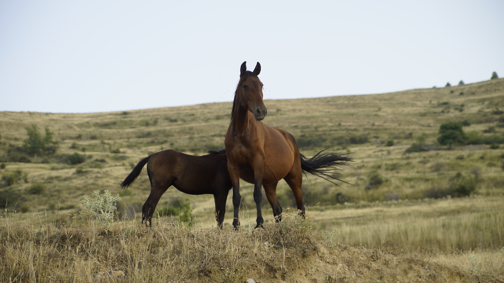

Land Light es un festival de creación de instalaciones efímeras.
Durante la semana del 3 al 9 de agosto de 2026, cincuenta personas nos perderemos en una masía aislada en el corazón de Teruel y experimentaremos creativamente con la naturaleza en sinergia con los medios audiovisuales.
En qué consiste Land Light
El festival surge con la intención de dar lugar a un encuentro cocreado por y para todes, dónde podamos intercambiar conocimientos, experimentar desde un espacio seguro, respetando el entonro y las especies que viven en el.
El objetivo de estas jornadas es crear instalaciones y prolongar su vida durante








Valores

Encarnar lo colectivo
Orgias a partir de las 19:00
Respeto a la Naturaleza
Tener 2 pares de ovarios bien gordos y no tirar colillas guarros

Independencia de Recuros
Tener presente la dependencia del sistema de consumo capitalista, y apreciar lo que te ofrece la naturaleza.
Preguntas Frecuentes
La masía se encuentra entre Villarluengo y Tronchón. Cuando confirmes tu asistencia recibirás las coordenadas exactas
No, es crucial un vehiculo. Si no dispones de uno, apelamos a la fuerza grupal y ofrecemos un grupo de Telegram para compartir comunicaciones y coche con otros participantes.
No, consideramos que es crucial venir todos los dias, pero esta experiencia está diseñada para ser disfrutada desde el inicio hasta el final. Puedes llegar e irte cuando quieras, pero desde Land Light queremos incentivar la estancia entera
Tu explicación aquí...